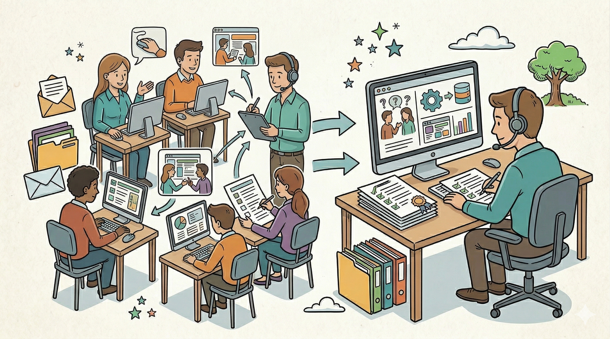

2.2: Técnicas de Elicitação de Requisitos — O Arsenal do Analista
2.2: Técnicas de Elicitação de Requisitos — O Arsenal do Analista
Introdução: O Desafio da Descoberta
O maior obstáculo na elicitação é que o conhecimento de negócio costuma ser tácito (está na cabeça das pessoas, mas não está formalizado). O objetivo das técnicas de levantamento é transformar esse conhecimento tácito em conhecimento explícito (documentado e modelável).
Abaixo, as principais técnicas utilizadas para capturar os requisitos de um sistema:
1. Entrevista
A técnica mais comum e direta. Consiste em uma conversa estruturada ou semiestruturada com os stakeholders.

Aplicação:
Ideal para entender objetivos de alto nível, opiniões e sentimentos sobre o sistema atual.
Vantagem:
Permite o contato direto e a percepção de nuances (tom de voz, hesitações).
Desvantagem:
Consome muito tempo e o resultado depende da habilidade de comunicação do analista.
2. Questionário
Uma técnica quantitativa enviada a um grande número de pessoas.

Aplicação:
Útil quando os usuários estão geograficamente dispersos ou quando se precisa de dados estatísticos (ex: "70% dos usuários acham o sistema atual lento").
Vantagem:
Baixo custo e coleta rápida de grandes volumes de dados.
Desvantagem:
Não permite o aprofundamento em respostas vagas e as perguntas podem ser mal interpretadas.
3. Observação (Etnografia)
O analista atua como um "sombra", acompanhando o usuário em sua rotina de trabalho real.

Aplicação:
Essencial para descobrir requisitos que o usuário esquece de mencionar por serem "óbvios demais" ou para identificar processos que divergem da regra oficial da empresa.
Vantagem:
Revela a realidade operacional nua e crua.
Desvantagem:
Pode ser invasiva e o comportamento do usuário pode mudar por se sentir observado (Efeito Hawthorne).
4. Prototipagem
Criação de versões simplificadas (baixa ou alta fidelidade) das interfaces e fluxos do sistema.
Aplicação:
Utilizada para validar requisitos visuais e de usabilidade antes da codificação.
Vantagem:
Reduz drasticamente a ambiguidade; o cliente "vê" o que está sendo planejado.
Desvantagem:
O cliente pode confundir o protótipo com o sistema real e achar que o projeto já está quase pronto.
5. JAD (Joint Application Design)
Workshops intensivos que reúnem analistas, desenvolvedores e stakeholders em uma mesma sala por um período determinado.
Aplicação:
Projetos de alta complexidade que exigem decisões rápidas e consenso entre departamentos.
Vantagem:
Acelera o processo de levantamento e reduz conflitos de requisitos.
Desvantagem:
Difícil de agendar e requer um moderador experiente para evitar que vozes dominantes abafem as outras.
6. Brainstorming
Sessões de geração de ideias sem julgamento imediato.
Aplicação:
Na fase inicial de concepção, para buscar soluções criativas para problemas de negócio.
Vantagem:
Estimula a inovação e o engajamento da equipe.
Desvantagem:
Pode gerar muitos requisitos irreais ou fora de escopo se não houver um filtro posterior.
7. Análise de Documentos e Benchmarking
Estudo de manuais de sistemas antigos, relatórios, formulários e análise de softwares concorrentes.
Aplicação:
Para entender as regras de negócio já estabelecidas e os padrões de mercado.
Vantagem:
Fornece uma base sólida e fatual que não depende da memória das pessoas.
Desvantagem:
Os documentos podem estar desatualizados em relação à prática real.
📈 Matriz de Seleção de Técnica
Um analista profissional raramente usa apenas uma técnica. A escolha depende do contexto:
| Técnica | Volume de Pessoas | Profundidade da Informação | Custo/Esforço |
|---|---|---|---|
| Entrevista | Baixo | Alta | Alto |
| Questionário | Alto | Baixa | Baixo |
| Observação | Baixo | Altíssima | Muito Alto |
| JAD | Médio | Alta | Muito Alto |
| Prototipagem | Médio | Alta | Médio |
📝 Conclusão Geral
O segredo da elicitação eficaz está na triangulação: usar uma combinação de técnicas (ex: Entrevista para entender o topo, Questionário para a base e Observação para validar o meio). O resultado final desta fase deve ser um entendimento claro que permita ao analista começar a classificar o que é funcional e o que não é.
📚 Este material foi criado por Kristian Erdmann e compõe a base técnica da Unidade Curricular de Análise e Modelagem de Sistemas.